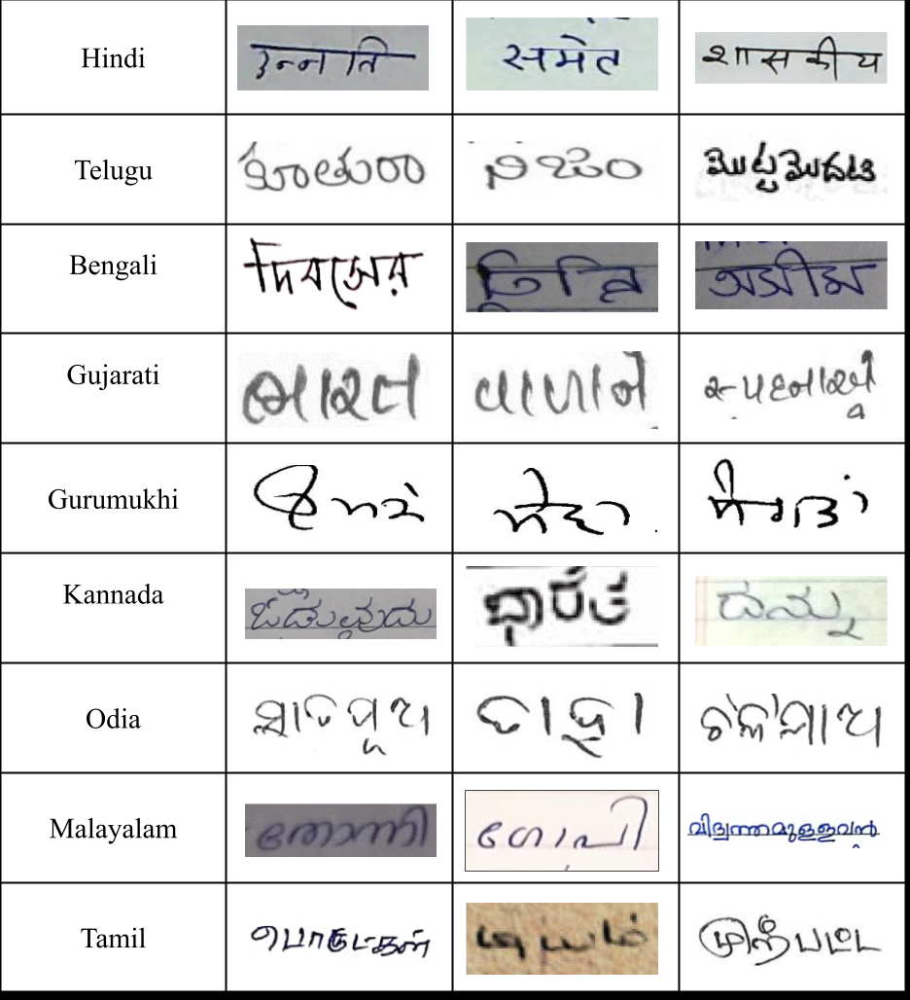
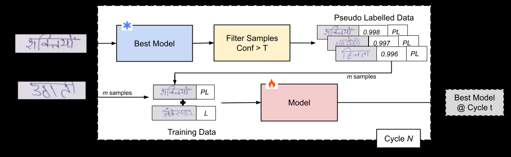
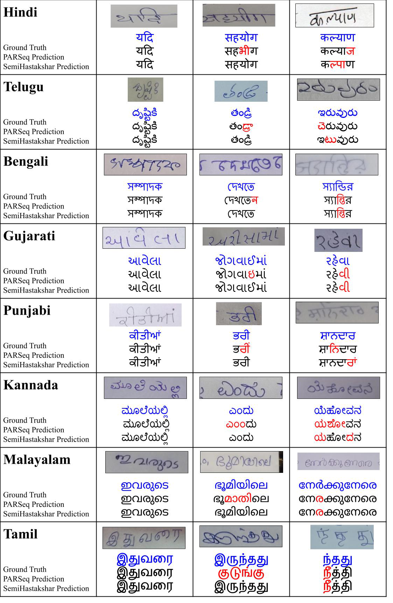

Training on large-scale unlabeled handwriting collected from the web to generalize better to real-world Indic handwriting.

Handwritten Text Recognition (HTR) remains a challenging task, especially in Indic languages, due to varied handwriting styles, complex character structures, and the scarcity of annotated data. While deep learning models have shown promising results on curated benchmarks, their performance often degrades in real-world scenarios with high variability in writing.
To address this, we propose a semi-supervised approach, SemiHastakshar, that leverages large-scale unlabeled word-level images collected from diverse sources across the Internet. We employ a high-confidence pseudo-labeling strategy to train on unlabeled samples iteratively. It allows the model to learn from a wider distribution of handwriting styles and improve generalization across writers. Our method demonstrates that combining a small amount of labeled data with a large unlabeled corpus leads to more robust HTR models for Indic scripts, advancing scalable recognition in low-resource settings.
A large-scale collection of unlabeled word-level handwritten images spanning nine Indic languages, sourced from diverse online repositories.
A generalized multi-script OCR model that leverages unlabeled samples via pseudo-labeling to improve recognition across varied handwriting styles.
Significant accuracy gains from fine-tuning on unlabeled target-domain data alone, enabling personalized recognition in low-resource settings.
An extensive ablation quantifying how the amount of labeled data affects final performance, to understand the data–performance trade-off.
Starting from a base recognizer, SemiHastakshar runs the current best model over the unlabeled Indic-HW-Wild pool, keeps only predictions above a confidence threshold as pseudo-labels, and retrains on a mix of labeled and pseudo-labeled samples. This repeats for several cycles, each time refreshing the "best model" used to generate the next round of pseudo-labels.

SemiHastakshar is compared against a PARSeq HTR baseline trained only on labeled data, both in-domain (IIIT-INDIC-HW-WORDS) and, more importantly, out-of-domain on unconstrained real-world handwriting (IIIT-INDIC-HW-UC).
WER and CER on the unconstrained IIIT-INDIC-HW-UC test set — where the gains matter most. Bold indicates our best result.
| Language | PARSeq HTR (baseline) | SemiHastakshar | ||
|---|---|---|---|---|
| WER↓ | CER↓ | WER↓ | CER↓ | |
| Hindi | 53.00 | 31.94 | 38.62 | 26.49 |
| Bengali | 41.71 | 21.58 | 29.09 | 14.86 |
| Telugu | 60.56 | 30.58 | 41.66 | 18.12 |
| Gujarati | 78.39 | 66.57 | 70.70 | 54.73 |
| Punjabi | 43.79 | 29.32 | 43.53 | 28.68 |
| Kannada | 65.06 | 45.71 | 60.53 | 41.18 |
| Malayalam | 59.38 | 55.43 | 55.29 | 44.61 |
| Tamil | 54.99 | 29.77 | 45.02 | 21.13 |

Reducing supervised pretraining data from 60k–80k to 30k samples, on the IIIT-INDIC-HW-UC dataset. Bold indicates the better (full-data) result.
| Language | Full Data (60k–80k) | 30k Samples | ||
|---|---|---|---|---|
| WER (%) | CER (%) | WER (%) | CER (%) | |
| Hindi | 38.62 | 26.49 | 57.89 | 58.73 |
| Telugu | 41.66 | 18.12 | 66.16 | 54.29 |
| Bengali | 29.09 | 14.86 | 41.43 | 22.87 |
Reducing labeled data from 60k–80k to 30k leads to a consistent, substantial increase in WER and CER — sufficient supervised pretraining is crucial before the model can benefit from unlabeled data; semi-supervised fine-tuning alone cannot compensate for limited initial supervision.